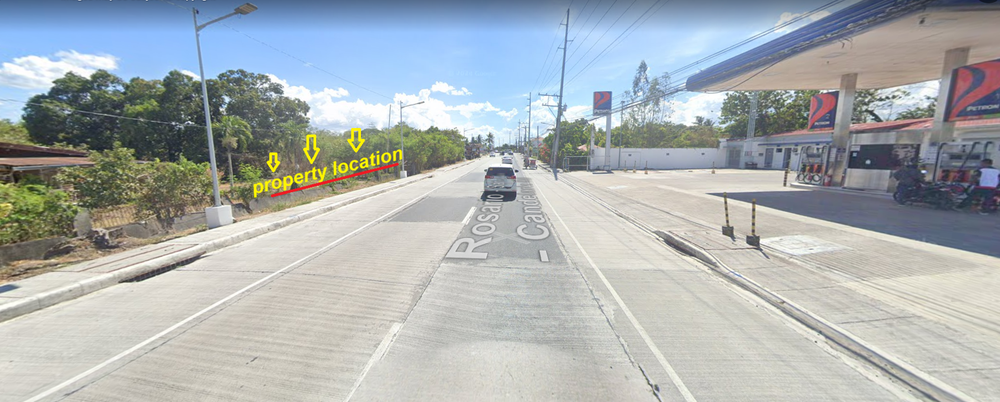
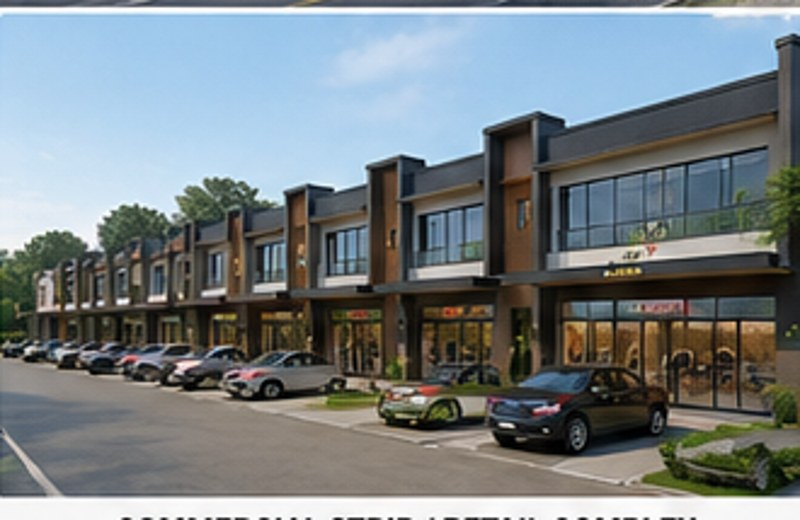
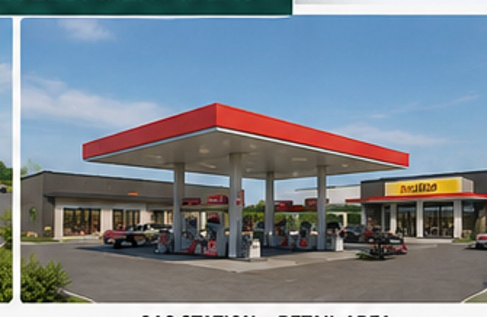
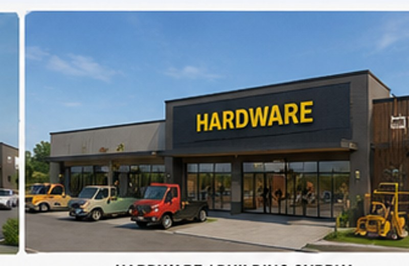
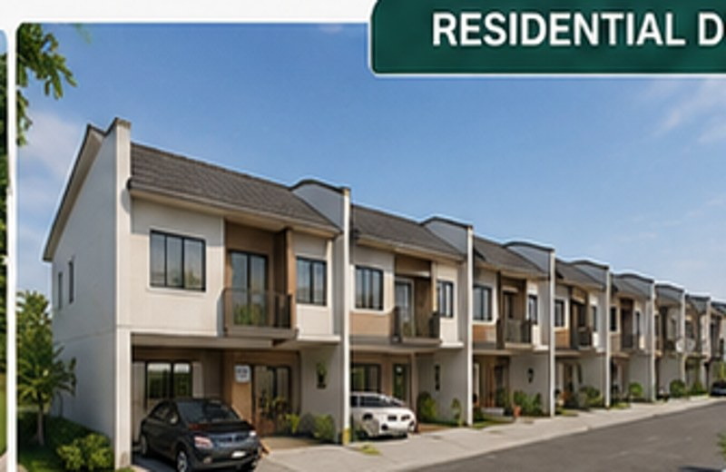
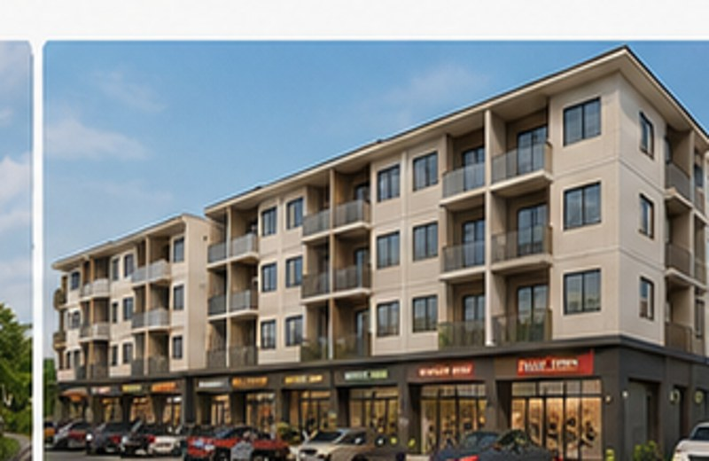
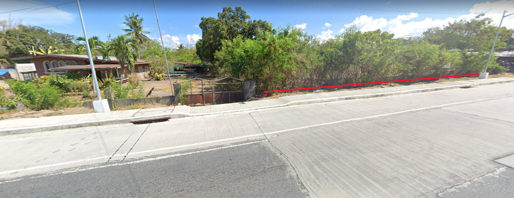
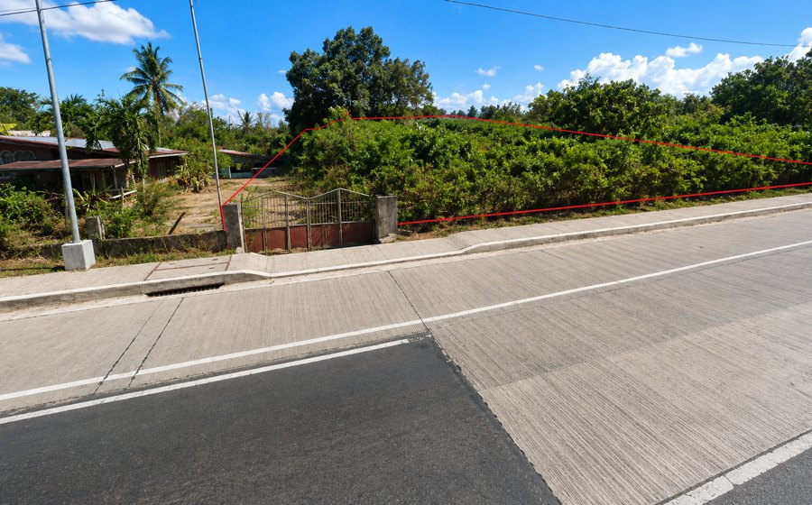
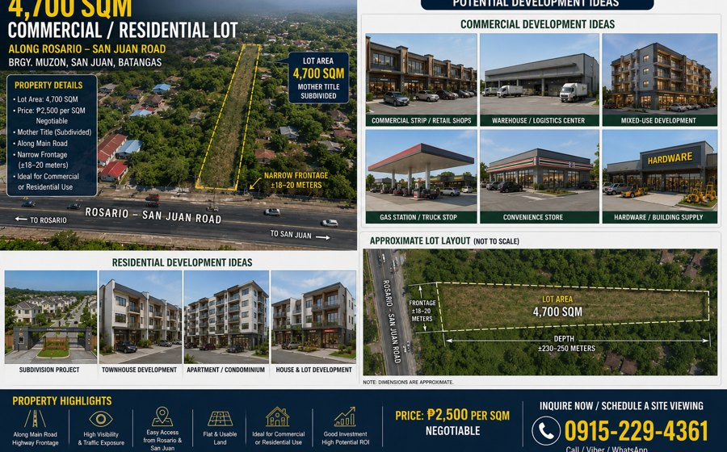
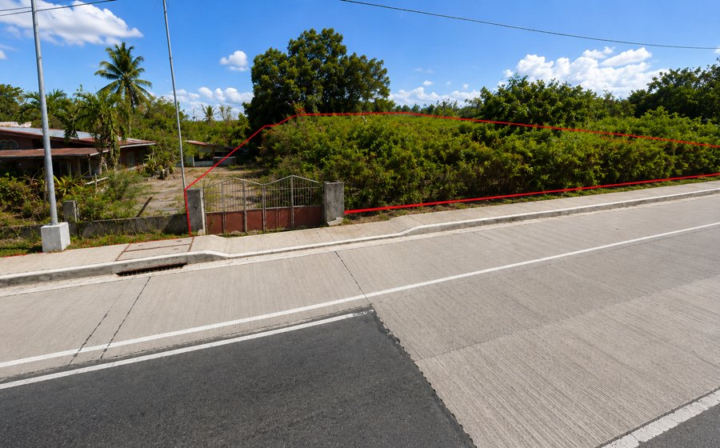

01
Maximum Road Exposure
Located along a major provincial route with strong visibility for commercial users.
Commercial • Residential • Investment • Development potential along Rosario–San Juan Road, Brgy. Muzon.
A large highway-frontage land asset with practical development potential for commercial, logistics, retail, or residential use.
Realistic visual sections help buyers quickly understand the property's business and investment potential.

Located along a major provincial route with strong visibility for commercial users.

Ideal for retail spaces, showrooms, restaurants, services, or rental units.

Deep rectangular layout may support storage, distribution, and light logistics concepts.
Concept images are for visualization only and help buyers imagine possible business uses for the property.
Visible roadside frontage for shops, offices, restaurants, and service tenants.
Potential for storage, supply distribution, hardware, or light industrial support.

Possible site for automotive services, convenience retail, food businesses, or drive-in concepts.

Good frontage exposure for construction supply, showroom, and local business expansion.

Alternative use for housing, apartment, or mixed commercial-residential development.

Combine ground-floor commercial activity with residential or rental spaces above.
The property is positioned along Rosario–San Juan Road and directly across Petron Muzon. The map image below is the San Juan Batangas property locator map.

These images show the property frontage, highway position, and aerial reference along Rosario–San Juan Road.



Supports commercial visibility and convenient transport access.

Large land assets along road corridors often become more valuable as nearby areas develop.

A clear roadside position can benefit businesses that rely on walk-in and drive-by customers.
Brgy. Muzon, San Juan, Batangas, along Rosario–San Juan Road, directly across Petron Muzon.
The total lot area is approximately 4,700 SQM.
₱2,500 per SQM, negotiable for serious buyers. Approximate total price is ₱11.75M.
Mother Title (Subdivided).
Possible uses include commercial strip, warehouse, logistics facility, retail spaces, service businesses, residential development, or mixed-use concept subject to permits and due diligence.
Yes. Site viewing can be arranged by appointment.
Request the location map, property details, and viewing schedule for this San Juan Batangas highway lot.